CaTEGORÍA – Porcelanato
Porcelanato de alto rendimiento para ARQUITECTURA Y DISEÑO
Más de 50 modelos de línea con la calidad de Time Ceramics para proyectos residenciales y comerciales.
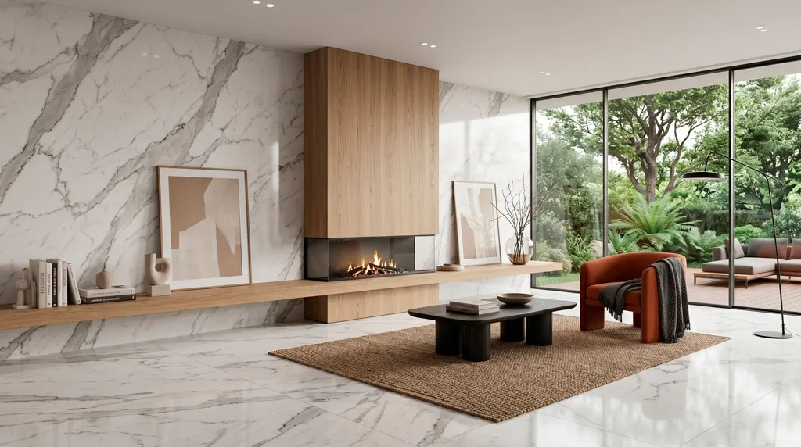
← Regresar al catálogo
Selección de acabados en porcelanato
La belleza de los materiales naturales perfeccionada por la innovación. Descubre una colección versátil y de alto desempeño, diseñada para superar las exigencias estéticas y funcionales de cualquier proyecto.
Respaldados por la calidad y tecnología de Time Ceramics, nuestro extenso catálogo materializa tu visión a través de:
-
Amplia selección: Más de 50 modelos de línea diseñados para adaptarse a cualquier requerimiento arquitectónico.
-
Versatilidad de acabados: Diseños y texturas exclusivas disponibles en superficies mate, brillantes, granilladas, etc.
-
Formatos estratégicos: Piezas en medidas de 30x60 cm, 60x60 cm y 60x120 cm para facilitar la modulación espacial.
-
Alto desempeño: Una solución técnica que combina un diseño impecable con una durabilidad superior para obras de cualquier escala.
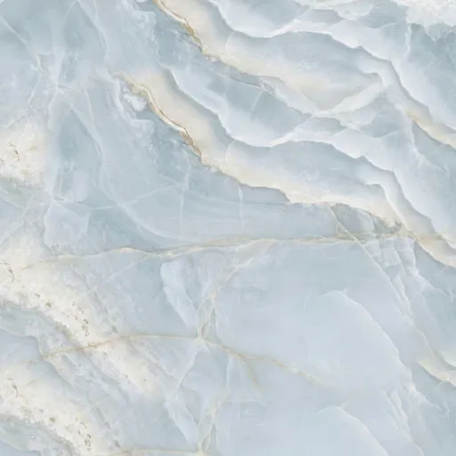
Porcelanato Pulido Bellagio Azul
Un statement de diseño para proyectos extraordinarios. Esta pieza magistral reinterpreta la profundidad del ónix natural, desplegando un oleaje visual en tonos azul glaciar, vetas perladas y delicados acentos arena. Su acabado pulido de alto brillo inunda los espacios de luz y sofisticación, siendo la elección estelar para baños de lujo, lobbys o muros de acento que buscan ser los protagonistas.
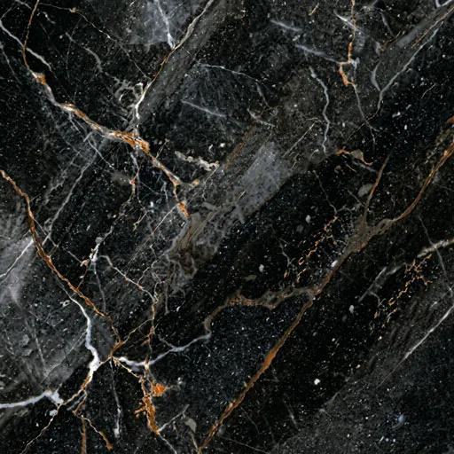
Porcelanato High Gloss Harlem
Lujo dramático y absoluto. Este imponente porcelanato captura la esencia del mármol negro exclusivo, donde vetas blancas y vibrantes destellos cobrizos estallan sobre un fondo profundo. Su acabado High Gloss (efecto espejo) multiplica la luz, haciéndolo ideal para espacios de vanguardia y muros de acento que exigen protagonismo.
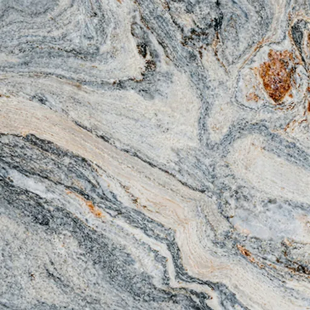
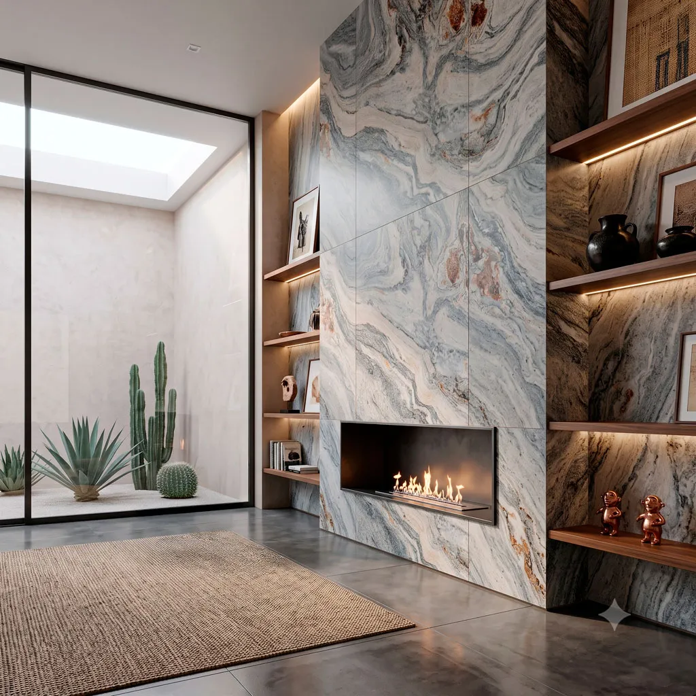
Porcelanato Mate Mustagh Natural
Dinamismo orgánico y elegancia contemporánea. Este porcelanato reproduce el cautivador movimiento de un mármol exótico, fusionando fluidas vetas en gris acero con dramáticos acentos cobrizos. Su sofisticado acabado mate absorbe la luz para ofrecer una estética serena y vanguardista, ideal para interiores imponentes.
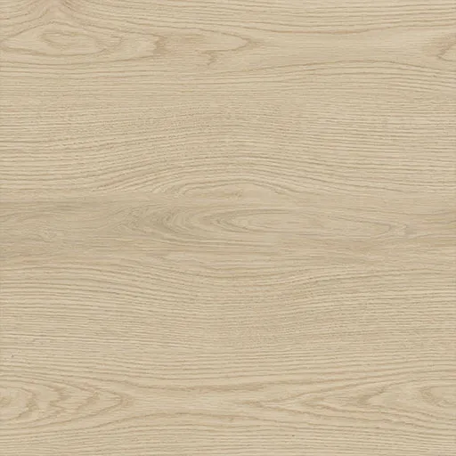
Porcelanato Madera Mónaco Amarillo
Calidez luminosa para interiores acogedores. Este porcelanato reproduce con extraordinaria fidelidad la belleza de la madera natural, destacando por su suave base en tonos arena y sus sutiles vetas orgánicas. Su diseño claro y limpio es la opción perfecta para aportar amplitud visual y un estilo nórdico o contemporáneo a cualquier espacio.
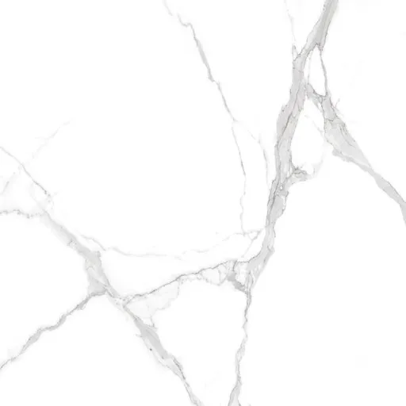
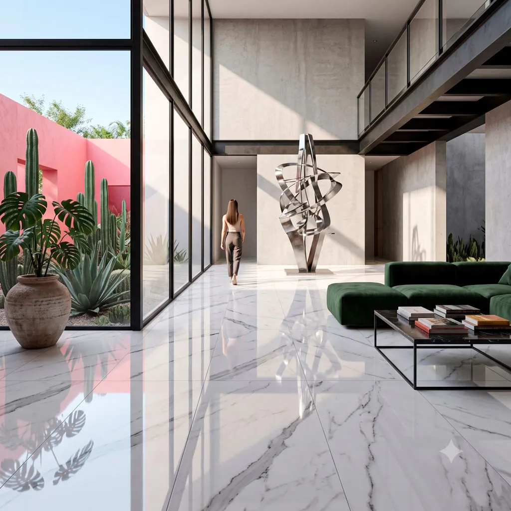
Porcelanato Pulido Grecia Blanco
Lujo atemporal y luminosidad absoluta. Este deslumbrante porcelanato captura la majestuosidad del mármol clásico, presentando un fondo blanco inmaculado surcado por elegantes y marcadas vetas en tonos gris carbón. Su acabado pulido de alto brillo expande visualmente cualquier espacio, convirtiéndolo en la elección perfecta para interiores sofisticados y minimalistas.
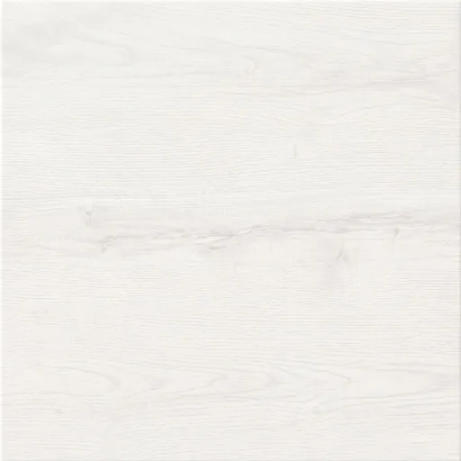
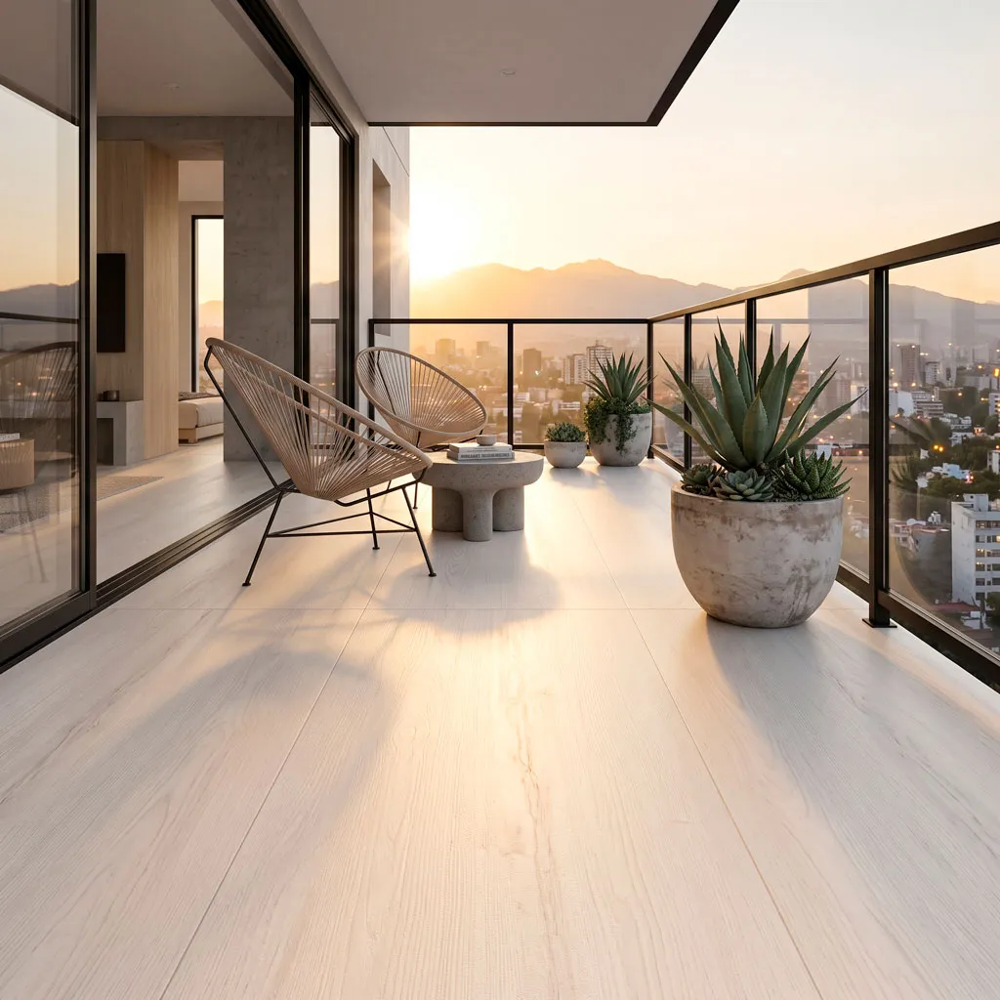
Porcelanato Madera Nice Ivory
Luminosidad y sutileza minimalista. Este elegante porcelanato captura la esencia de la madera clara, destacando por su suave paleta en tonos marfil y ceniza con una veta sumamente delicada. Su estética limpia y visualmente continua es la opción ideal para maximizar la luz natural y crear espacios serenos de inspiración nórdica.
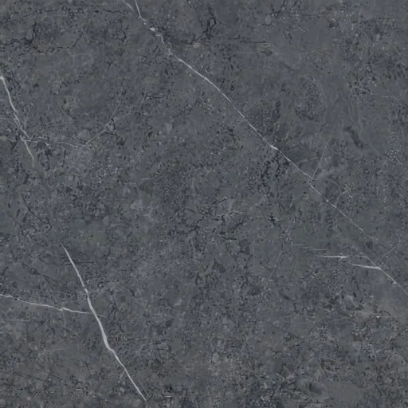
Porcelanato Mate Alfa Gris Oscuro
Sobriedad y vanguardia arquitectónica. Este imponente porcelanato destaca por su profundo fondo en tonos gris acero y grafito, enriquecido con una sutil textura pétrea y cruzado por finas vetas blancas. Su sofisticado acabado mate absorbe la luz, creando atmósferas serenas, elegantes y de fuerte carácter industrial. Es la elección perfecta para espacios contemporáneos que buscan la fuerza visual de la piedra natural.
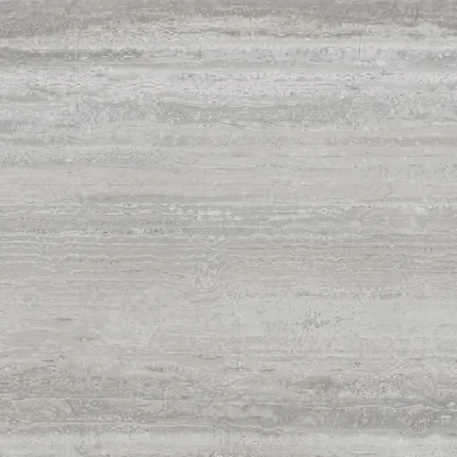
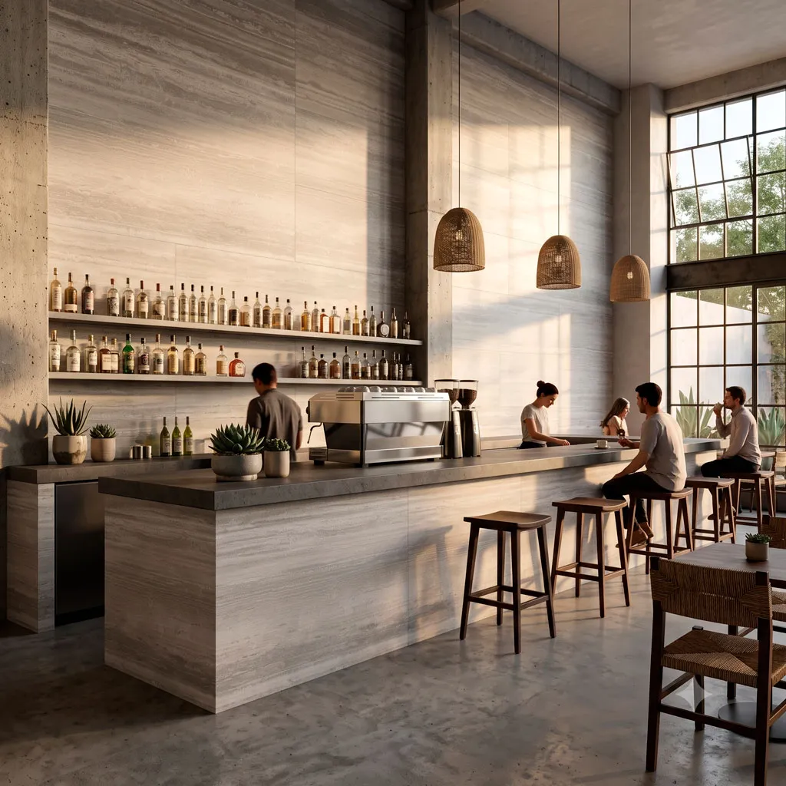
Porcelanato Piedra Arcadia Gris Medio
Amplitud visual y serenidad contemporánea. Este sofisticado porcelanato reproduce a la perfección la estética estriada del travertino gris, destacando por un armónico patrón de vetas horizontales en suaves tonos plata y ceniza. Su diseño lineal crea una sensación de continuidad que ensancha cualquier espacio, siendo la opción ideal para baños modernos, muros de acento y ambientes minimalistas.
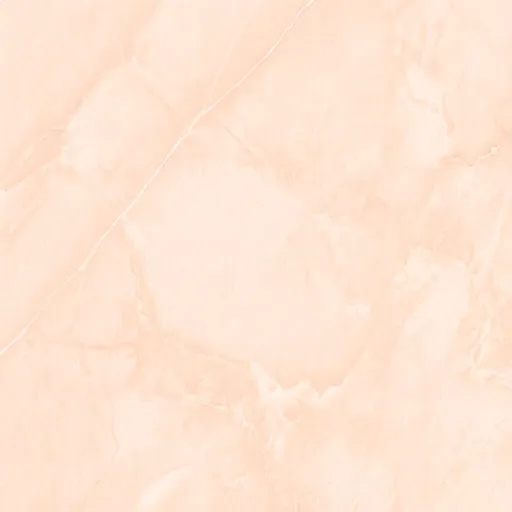
Porcelanato Mate Apulia Beige
Calidez y suavidad envolvente. Este delicado porcelanato destaca por su base en tonos crema y sutiles matices durazno, suavemente surcada por finas vetas blancas. Su refinado acabado mate absorbe la luz para crear atmósferas serenas y acogedoras, perfecto para unificar áreas residenciales de descanso o proyectos comerciales y boutiques que buscan proyectar una elegancia relajada.
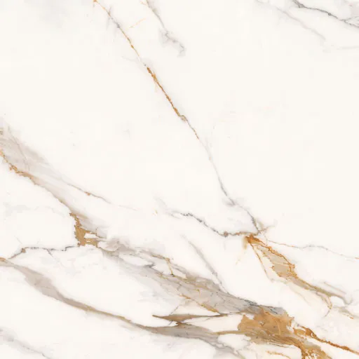
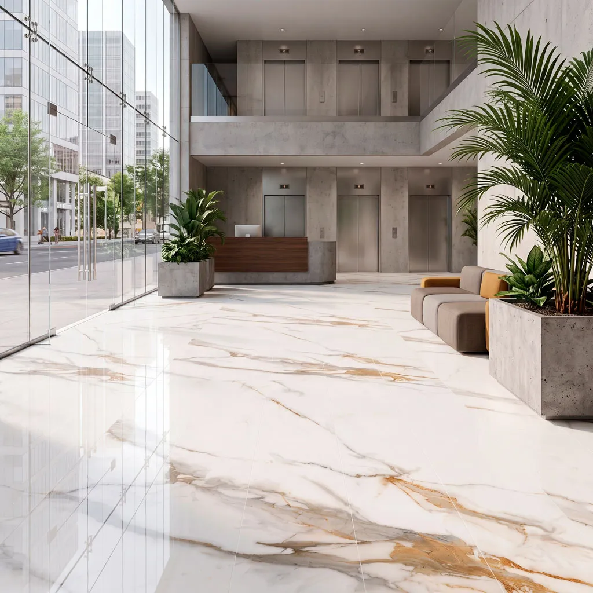
Porcelanato Mate Carrara Gold
Elegancia clásica con un toque cálido. Este sofisticado porcelanato reinterpreta el icónico diseño Carrara, fusionando un fondo blanco inmaculado con majestuosas vetas en tonos gris suave y vibrantes acentos dorados. Su refinado acabado mate ofrece una superficie serena y contemporánea, ideal para bañar de luz y un lujo sutil cualquier proyecto interior.
Descarga el catálogo completo de PORCELANATO
EXPLORAR
Tu visión no tiene límites, nuestra selección tampoco.
Estos son solo algunos de los favoritos. Contamos con una gran variedad de colores, formatos y acabados para cada estilo arquitectónico.
Explora la colección completa o platícanos qué tienes en mente para tu obra.
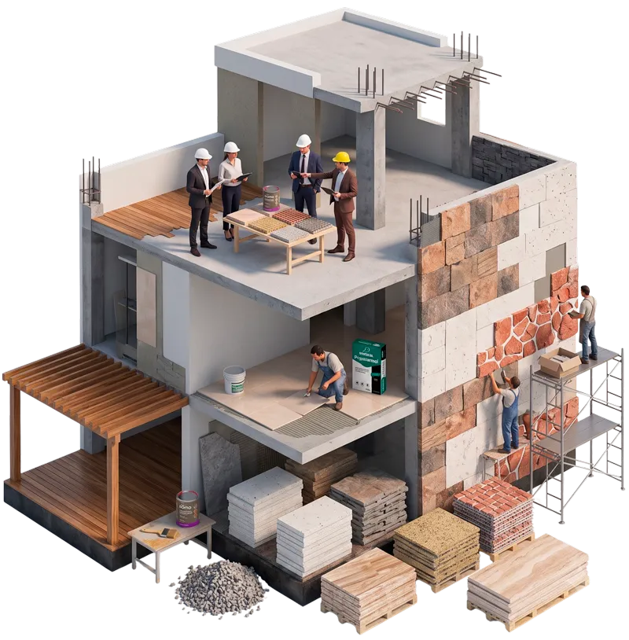
contáctanos
¿Listo para iniciar tu proyecto?
Hablemos.
Te daremos el mejor precio directo de fábrica y opciones de envío a tu medida.
Ya sea que busques el material ideal para una fachada, necesites ayuda para calcular los metros cuadrados de tu espacio o quieras conocer nuestros tiempos de entrega, escríbenos.